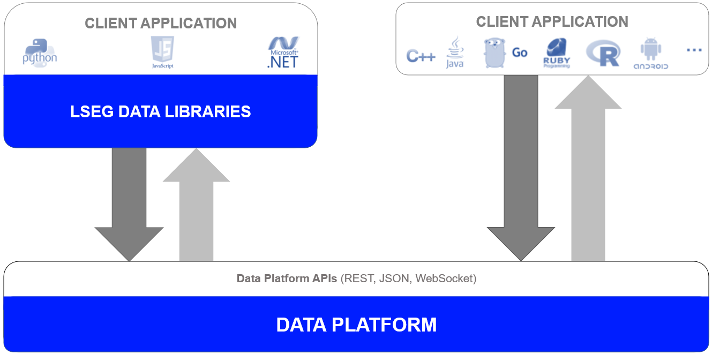

LSEG Data Libraries are easy-to-use software libraries providing developers with access to the data services of LSEG. These libraries and APIs are designed to provide consistent and easy access to the platform through its different access points, and span several programming languages that target both professional developers and financial coders. LSEG Data Libraries allow you to access LSEG data from the desktop, through local streaming services, or directly to the cloud using your preferred programming language.
LSEG Data Libraries are available for Python, TypeScript or JavaScript and .NET languages in the following libraries:

To learn more about the LSEG Data Libraries, you should connect to the LSEG Developer Community. Register and log in to the LSEG Developer Community portal, for free access to a variety of learning materials like quick start guides, tutorials, user documentation and much more.
If you have any questions regarding the API usage, you may post them on the LSEG Data Q&A Forum.